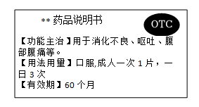

2023年北京中考生物 第25题 解析
25. 某药品说明书内容节选如下图，关于该药物的叙述正确的是（ ）

A. 需凭医生开具的处方才能购买B. 适用于消化不良患者的治疗
C. 病症严重时应加倍服用D. 超过有效期仍然可以服用
【答案】B
【解析】
【分析】安全用药是指根据病情需要，正确选择药物的品种、剂量和服用时间等，以充分发最佳效果，尽量避免药物对人体产生的不良作用或危害。
【详解】A．说明书上有非处方药（OTC）标注，因此，不需执业医师开具的处方就可以购买，按说明书服用，适用于容易自我诊断、自我治疗的小病，A错误。
B．从说明书上的功能主治可知，该药适用于消化不良患者的治疗，B正确。
C．用药前要明确诊断，要针对不同的病情，适当用药，药物一般都有一定的毒副作用，过量服用，会危害人体健康，用药剂量要适当，C错误。
D．任何药物过期都是不能使用的，任何药物都是有保质期。在使用药物前一定要先确定药物是否在有效期内，只有使用有效期内的药物才能达到临床效果，并且是安全、有效的。药在有效期过了之后使用，可以使药物的药效减弱，甚至失效。而有些药物在过期之后可能会出现药物的化学性质改变，使用之后可能会导致过敏反应或者中毒反应，引起比较严重的副作用，D错误。
故选B。
第二部分
本部分共7题，共45分。